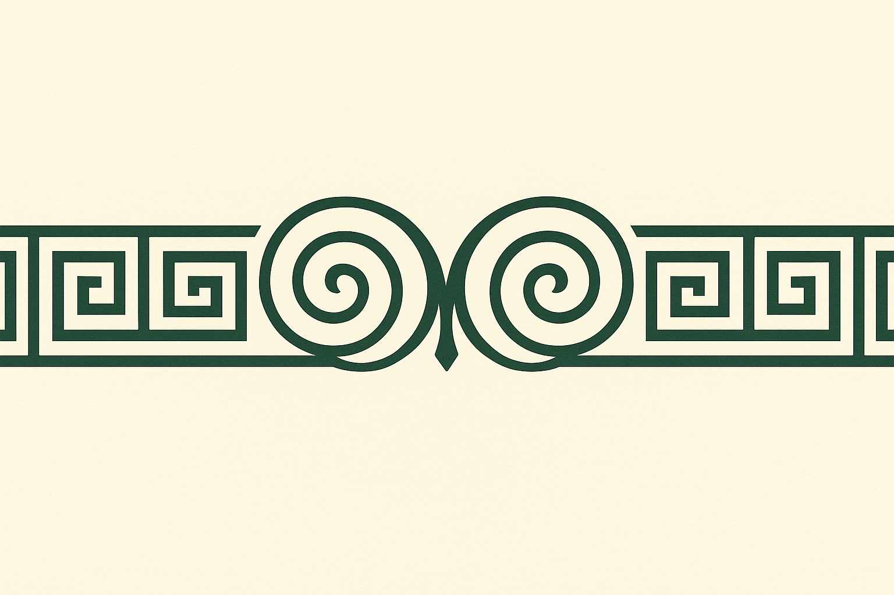
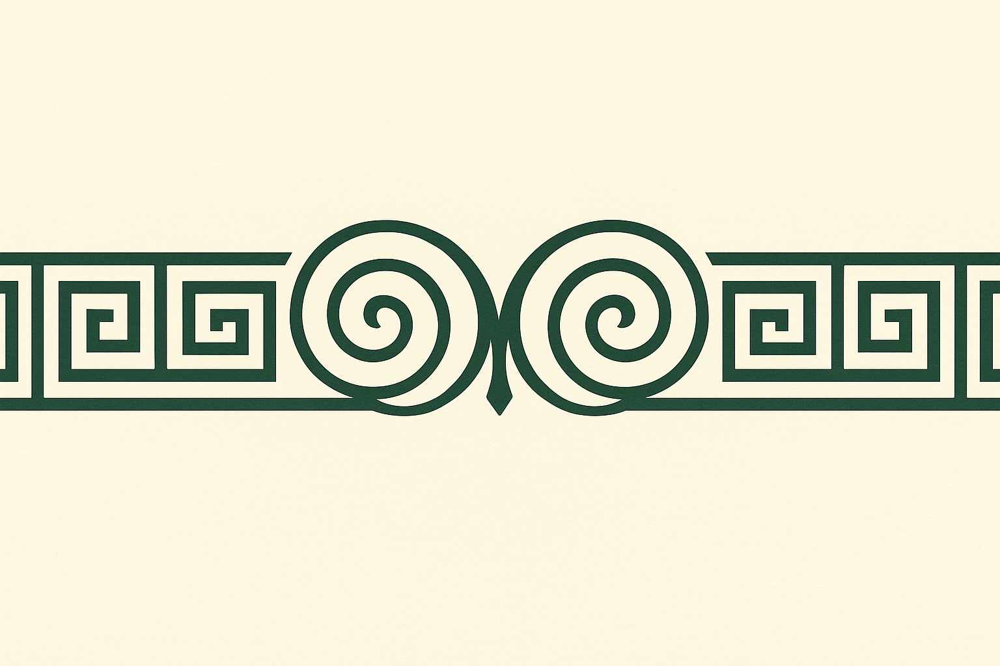

Tussen onzin en openbaring
Tussen onzin en openbaring
Waar het schuurt, ontstaat inzicht. Deze denkstukken zijn observaties van binnenuit, in tekst gegoten — soms plagerig, soms pijnlijk, maar altijd persoonlijk. Ze werpen een ander licht op de leefwereld van een ander en voeden het hoofd en hart van de lezer.
Lees meer →Thema’s die ertoe doen — onderbouwd met bronnen. Van de zaadoliehype en lobbygroepen tot digitale valuta en subtiele beïnvloeding via media, onderwijs, politiek en cultuur.
Lees meer →Woorden kunnen verbinden, uitdagen, verlichten. Wil jij iets bijdragen aan dit platform — een tekst, een gedachte, een link? Jouw stem is welkom.
Draag iets bij →Dit is geen klassieke site, maar een open source platform dat uitnodigt tot beweging, uitwisseling en kritische nieuwsgierigheid. Wil je weten waarom het ontstond?
Lees meer over het platform →